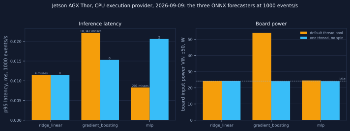
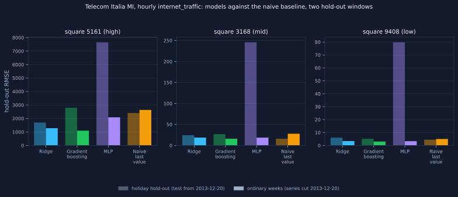
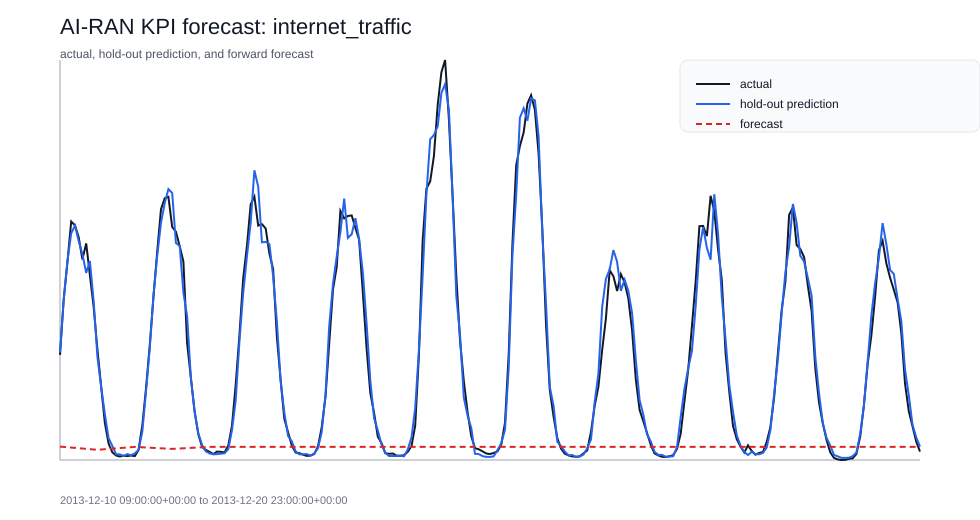
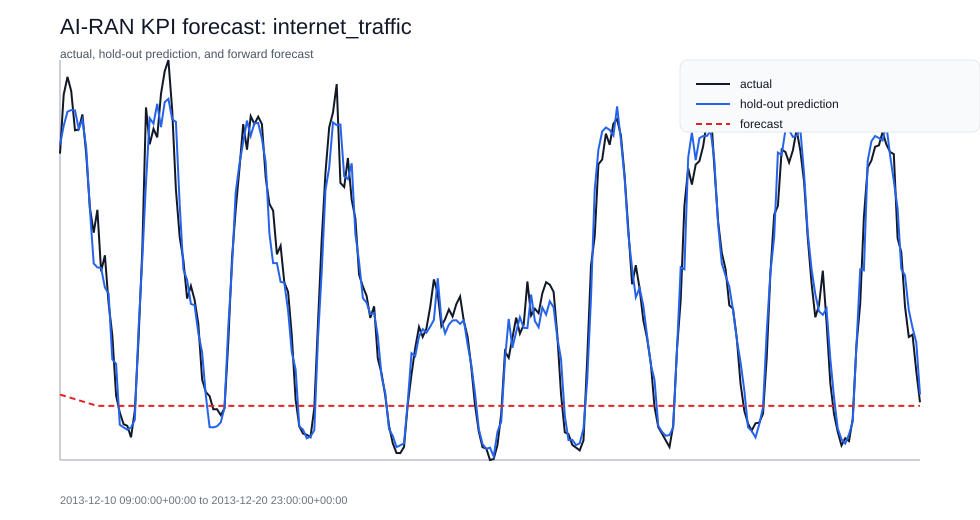
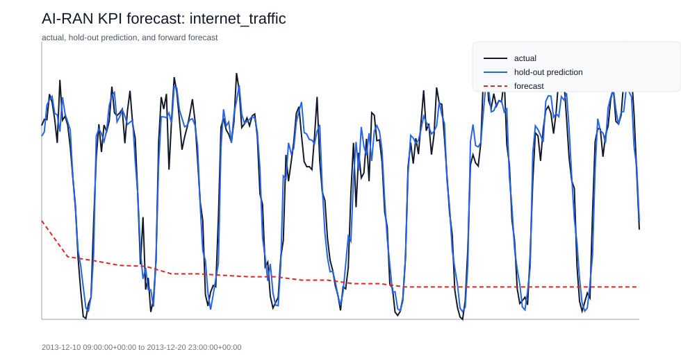

The current sample forecast peaks at 56.31 against an advisory policy threshold of 80.0, so the generated A1 candidate recommends no_action. The useful signal is not that Ridge regression is novel. The useful signal is that the forecast is wrapped in typed input, an auditable policy candidate, and scenario evidence an engineer can inspect.
Forecast prb_dl_util on CELL_001 peaks at 56.31 (model=ridge_linear, threshold=80.0). No policy action required.
The dashboard does not pretend to control the network. It shows forecast evidence, scenario impact, and an advisory A1 policy candidate before any human or downstream system takes action.
Project-defined operational thresholds over forecast PRB DL utilization. These thresholds turn existing forecast values into readable risk tiers; they are not operator SLA values.
| Tier | Forecast PRB DL util | Operational interpretation |
|---|---|---|
| Stable | < 60 | Routine monitoring; no action implied by this project threshold. |
| Elevated | 60-74.99 | Watch capacity pressure and compare forecast drift across the next horizon. |
| Congested | 75-84.99 | Prepare traffic-steering or capacity investigation as an advisory candidate. |
| Critical | >= 85 | Escalate planning review; this is still decision support, not closed-loop control. |
The model is the least interesting part of this repo. Ridge, GradientBoosting, and MLP are compared on the same sample KPI and forward temporal split so the weak result stays visible: Ridge is best on this tiny sample, while the MLP underfits badly.
| Model | RMSE | MAE | MAPE | Readout |
|---|---|---|---|---|
| ridge_linear | 0.84 | 0.70 | 0.82% | best current baseline |
| gradient_boosting | 2.88 | 2.63 | 3.16% | weaker on this small sample |
| mlp | 22.59 | 19.64 | 26.96% | weaker on this small sample |
Scenario packs are deterministic stress overlays on synthetic telemetry. Higher error under a scenario is a signal to monitor transition windows and policy timing, not proof of live-network behavior.
| Scenario | RMSE | MAE | Status |
|---|---|---|---|
| congestion | 4.11 | 3.30 | measured |
| backhaul | 4.70 | 3.91 | highest error scenario |
| outage | 4.59 | 3.80 | measured |
The three ONNX exports run through the edge inference harness shared with jetson-edge-ai-security on jetsonthor (tegra264, 120W 1 power mode), onnxruntime CPU execution provider, synthetic inputs of the model shape, batch 1, paced load, 300.0 s per tier. Primary run thor_benchmark.json uses one intra-op and one inter-op thread with spinning disabled; the comparison run default_threads.json uses runtime defaults. Inference cost only, not forecast accuracy. At 1000 events/s:
| Model | p95 ms, one thread | p95 ms, default pool | Misses, one thread | Misses, default | VIN p50 mW, one thread | VIN p50 mW, default |
|---|---|---|---|---|---|---|
| ridge_linear | 0.0115 | 0.0115 | 0 | 4 | 24,170 | 24,184 |
| gradient_boosting | 0.0153 | 0.0222 | 0 | 18,342 | 24,112 | 54,114 |
| mlp | 0.0206 | 0.0083 | 2 | 201 | 24,110 | 24,574 |
The gradient-boosting graph engages the default thread pool: about 30 W of extra board power and 18,342 pacing misses, both removed by the single-thread setting. The linear model is unaffected; the MLP is faster under the default pool but misses more deadlines.

Public Milan grid dataset (doi:10.7910/DVN/EGZHFV, ODbL 1.0 (Open Database License), per the Dataverse terms of use), 62 daily files from 2013-11-01 to 2014-01-01, 319,896,289 raw rows. Hourly internet_traffic per square, three squares chosen by activity level (largest total, nearest the median, nearest the 10th percentile), time-ordered split with the last 20% held out, features are calendar terms and lags of the target only. RMSE in the dataset's activity units; every figure links to its file. Generated 2026-09-09T21:26:47Z. Full record: summary.json, dataset.json.
| Cell | Hours | Test rows | ridge_linear RMSE | gradient_boosting RMSE | mlp RMSE | Naive last value RMSE | Seasonal naive 24 h RMSE |
|---|---|---|---|---|---|---|---|
| high (5161) | 1488 | 293 | 1697.5 | 2793.5 | 7653.1 | 2407.7 | 4163.1 |
| mid (3168) | 1488 | 293 | 24.3 | 26.9 | 245.8 | 15.9 | 43.8 |
| low (9408) | 1488 | 293 | 6.0 | 5.1 | 79.8 | 4.4 | 7.8 |
Second window, series cut at 2013-12-20 so the hold-out falls in ordinary weeks (summary.json). In this window every model beats both baselines on every square; over the holiday window above the naive baseline wins on two of three. Both are reported.
| Square | ridge_linear RMSE | gradient_boosting RMSE | mlp RMSE | Naive last value RMSE | Seasonal naive 24 h RMSE |
|---|---|---|---|---|---|
| 5161 | 1279.8 | 1096.5 | 2085.7 | 2634.2 | 3336.0 |
| 3168 | 18.7 | 15.9 | 18.6 | 27.9 | 43.5 |
| 9408 | 3.4 | 3.0 | 3.3 | 5.0 | 4.7 |




A short engineering brief: what I built, what the evidence says, and where the live-RIC boundary starts.
The contracts around the model: rApp manifest, KPM input schema, advisory A1 output schema, and the R1-style dataflow demo.
Ridge / GradientBoosting / MLP head-to-head on the same KPI and time split, on the 48-row sample. Public-data accuracy is in the Telecom Italia section above.
Baseline KPI forecast, metrics, impact plot, and feature importance for the sample RAN telemetry.
Pre-shock versus shock-window evidence showing PRB, throughput, and latency stress on one cell.
Backhaul saturation example with throughput collapse and latency growth under constrained transport.
Cell-level outage and recovery example with throughput collapse, low PRB, and packet loss spikes.
Telemetry assumptions and synthetic data contract for reproducible runs.
Static landing page for GitHub Pages, release uploads, or other publishable report hosting.
The boundary is simple: this is a reproducible rApp pattern, not a deployed RIC workload. It uses synthetic and sample telemetry, does not connect to a live RAN, does not deploy an xApp or rApp, does not execute wire-protocol A1 transport, and does not perform autonomous control.
{kind=link}
{kind=link}
{kind=link}